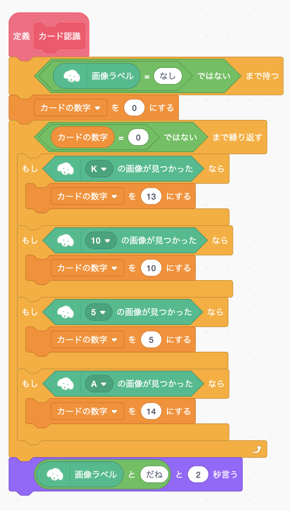

1
つぎにカードを認識するためのブロックをつくります。 先ほど作った「カード認識」ブロックの中身を次のようにプログラムしてください。
このオリジナルブロックはカメラに映ったカードが認識されるまで「もし」ブロックを繰り返し、認識したらそのカードの数字を「カードの数字」変数に入れます。 なおA(エース)は一番強いカードなので、1ではなくて14を入れてます。
2
カード認識ブロックが正しく動くかテストしてみましょう。 「定義 カード認識」ブロックをクリックしてカメラにカードを映して下さい。 正しく認識すると「〜だね」というメッセージが表示されます。